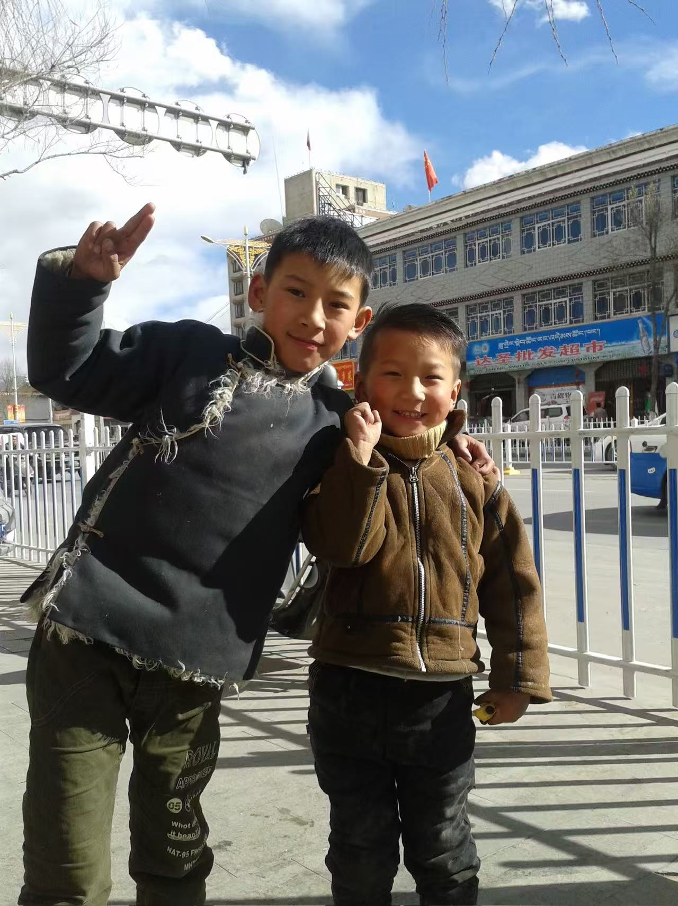

旦增塔杰
█
ཨོཾ་མ་ཎི་པདྨེ་ཧཱུྃ
像素与经幡之间，代码与雪山之下。
[ 关于我 ]
舞蹈课 · 19岁

和哥哥 · 江苏路
小时候的我
大一 · 过林卡
来自藏地的编程初学者。喜欢把代码和藏文化结合起来做有趣的东西。 相信技术不只是冷冰冰的逻辑，也可以有温度、有故事。 正在学习用 HTML、CSS 和 JavaScript 构建心中的世界。
[ 藏文文章 ]
用母语思考，用母语写作
བོད་ཀྱི་དགེ་འདུན་པས་ཤ་མཆོད་དོན་ཅི་ཡིན།
藏地僧人为何食肉
༡། ས་བབ་དང་ཁོར་ཡུག་གི་དགོས་མཁོ། ས་མཐོའི་གྲང་ངར་ཆེ་བའི་ཁོར་ཡུག་ཁྲོད། ཤ་མ་ཟོས་ན་ལུས་ཁམས་བདེ་ཐང་ཡོང་དཀའ་ཞིང་འཚོ་ཐབས་བྲལ་བ་རེད། དེར་བརྟེན་འདི་ནི་དད་པའི་གནད་དོན་ཙམ་མ་ཡིན་པར། གསོན་གནས་ཀྱི་དགོས་མཁོ་ངོ་མ་ཞིག་རེད།
一、地理环境的需求。在高海拔严寒的环境中，若不食肉，身体难以维持健康，生活难以为继。因此，这不仅是信仰问题，更是生存的真实需求。
༢། ཆོས་ལུགས་ཀྱི་ལྟ་ཚུལ་དང་ཐབས་མཁས། ནང་ཆོས་སུ་"རྣམ་གསུམ་དག་པའི་ཤ་"ཟ་ཆོག་པའི་གནང་བ་ཡོད་ཅིང་། ལྷག་པར་དུ་གསང་སྔགས་རྡོ་རྗེ་ཐེག་པའི་ལུགས་སུ་"སྒྱུར་བའི་ཐབས་"ལ་བརྟེན་ནས། ཤ་ཟ་དུས་སེམས་ཅན་དེར་དམིགས་ནས་སྙིང་རྗེས་བསྔོ་སྨོན་བྱས་ཏེ་སྡིག་པ་དག་པར་བྱེད་པའི་ཐབས་ལམ་ཡོད།
二、宗教的观念与方法。佛教中有"三净肉"的开许，尤其在金刚乘的体系中，通过"转化的方法"，食肉时以悲心回向众生，以此净化业障。
༣། སྤྱི་ཚོགས་དང་སྦྱིན་བདག་གི་འབྲེལ་བ། འབྲོག་ཁུལ་དུ་དད་ལྡན་མང་ཚོགས་ཀྱིས་དགོན་པར་འབུལ་རྒྱུ་ཡག་ཤོས་ནི་ཤ་མར་ཐུད་གསུམ་ཡིན། གལ་ཏེ་དགེ་འདུན་པས་དེ་དག་དང་ལེན་མ་བྱས་ཚེ། སྦྱིན་བདག་གི་དད་སེམས་ལ་ཕོག་ཐུག་འགྲོ་བ་མ་ཟད། དགོན་པ་དང་མང་ཚོགས་བར་གྱི་འབྲེལ་བའང་ཆད་ཉེན་ཡོད།
三、社会与施主的关系。在牧区，信众供养寺院最好的东西就是肉、酥油、奶渣。若僧人不接受这些供养，不仅会伤害施主的虔诚心，寺院与群众之间的联系也将面临断裂。
༤། ལོ་རྒྱུས་དང་སྤྱི་ཚོགས་ཀྱི་ལམ་ལུགས། སྔོན་ཆད་ཆོས་སྲིད་ཟུང་འབྲེལ་གྱི་ལམ་ལུགས་འོག དགོན་སྡེ་ཁག་ལ་ས་ཞིང་དང་འབྲོག་ལས་ཀྱི་དཔལ་འབྱོར་མ་ལག་ཡོད་པས། ཤ་ཟ་བ་ནི་སྐབས་དེའི་དཔལ་འབྱོར་དང་འཚོ་བའི་ཆ་ཤས་གལ་ཆེན་ཞིག་ཏུ་གྱུར་ཡོད།
四、历史与社会制度。往昔政教合一的制度下，各寺院拥有土地和牧业经济体系，食肉是当时经济与生活的重要组成部分。
༥། དེང་རབས་ཀྱི་འགྱུར་ལྡོག་དང་གདམ་ག དེང་སྐབས་འགྲིམ་འགྲུལ་དང་སྐྱེལ་འདྲེན་སྟབས་བདེ་རུ་སོང་བས། སྔོ་ཚལ་དང་ཤིང་ཏོག་གི་རིགས་མང་པོ་རག་རྒྱུ་ཡོད། དེར་བརྟེན་བླ་ཆེན་དང་དགེ་འདུན་པ་མང་པོས་དཀར་ཟས་ལ་བརྟེན་ནས་ཤ་སྤོང་བའི་ལས་འགུལ་སྤེལ་བཞིན་ཡོད། འདི་ནི་སྔོན་གྱི་"གསོན་ཐབས་ཆེད་ཤ་ཟ་བ་"ནས་ད་ལྟའི་"སྙིང་རྗེའི་ཆེད་དུ་ཤ་སྤོང་བ་"ཡི་ཕྱོགས་སུ་འགྱུར་ལྡོག་འགྲོ་བཞིན་པའི་མཚོན་རྟགས་རེད།
五、现代的转变与抉择。如今交通与物流变得便利，各种蔬菜水果都可以获得。因此，许多大德和僧人开始倡导素食、践行素食。这是从过去的"为生存而食肉"向现在的"因悲心而戒肉"转变的标志。
[ 读书笔记 ]
读过的书，走过的路
《窄门》
在爱的窄门里，我们都是爱的朝圣者。
阿丽莎犹如朝拜者，一直在追求窄门，从而去远离或逃避现实世俗的欲望和束缚。但逃避并不是解决问题的办法——她所追求的窄门，应该是面对现实困境、看透之后为解脱的一道门。
《我的老师》
I'm from Lhasa, which is a quiet city, and I find it very cozy.
I'm a big fan of my teacher, who is my brother. He is patient and humorous, especially when he teaches me English…
[ 留言板 ]
说点什么吧，像素也会发光 ✨
还没有留言，来做第一个留下足迹的人吧 👣
☁️ 加载留言中…